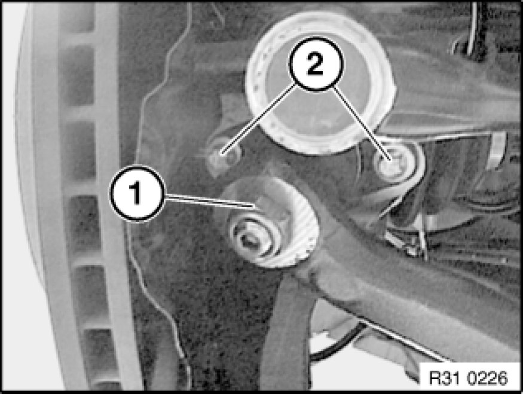
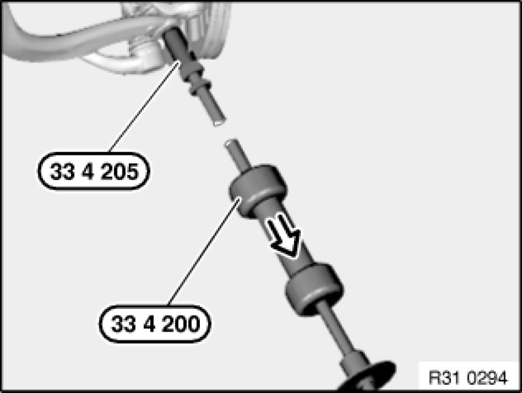
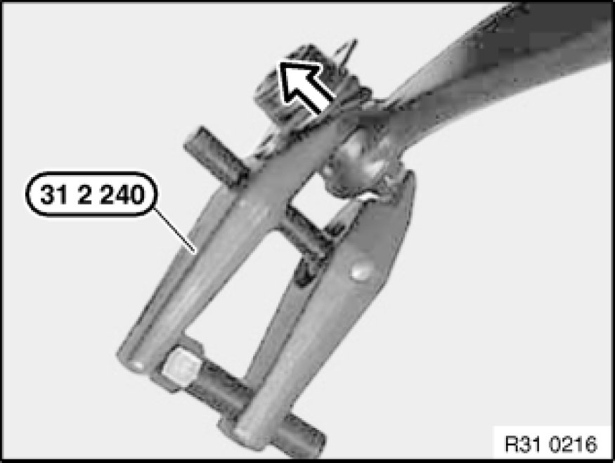

Removing and Installing/Replacing Guide Joint in Swivel Bearing
31 12 026 - Removing and installing/replacing guide joint in swivel bearing

Special tools required:
- 31 2 240 31 2 240 Puller
- 33 4 200 33 4 200 Tool Kit / Striker Fixture
- 33 4 205 33 4 200 Tool Kit / Striker Fixture

Necessary preliminary tasks:
- Remove front wheel Removing or Installing Front or Rear Wheel

Slacken nut (1), grip if necessary.
Release screws (2).
Remove tension strut with guide joint from swivel bearing.
Installation:
Recondition thread in swivel bearing.
Keep recess for guide joint, bore in tension strut and guide joint journal clean and free from grease.
Replace screws.
Tightening torque 31 12 21AZ Control Arms and Struts (Front) (guide joint to swivel bearing).
Replace self-locking nut.
Tightening torque 31 12 20AZ Control Arms and Struts (Front) (tension strut to guide joint).

Guide joint tightly seated in swivel bearing:
Important!
The guide joint must be replaced once it has been driven out with the special tools.
Secure special tool 33 4 205 33 4 200 Tool Kit / Striker Fixture to guide joint.
Drive guide joint out of swivel bearing with special tool 33 4 200 33 4 200 Tool Kit / Striker Fixture.

Important!
Screw on nut a few turns so that guide joint does not slip off unchecked when forced off.

Screw on nut a few turns.
Press guide joint with special tool 31 2 240 31 2 240 Puller out of tension strut.
Unscrew nut and remove guide joint.